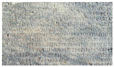

| Ana Sayfa | Asya Hunları | Göktürkler | Uygurlar |
“Türk” adının anlamı ile ilgili olarak çeşitli görüşler ileri sürülmüştür. Adları “Türk” sözcüğüne benzediği iddia edilen bazı toplulukların “Türk” milleti ile herhangi bir ilişkisi olmadığı bilimsel çalışmalarla ortaya konmuştur. Bu çalışmalara göre, “Türk” sözcüğü; “güç, kuvvet, güçlü, kuvvetli, cesur, türeli (kanun ve nizam sahibi) ve türeyen, çoğalan” anlamlarına gelmektedir. Tarihte “Türk” adıyla adlandırılan ilk devlet “Gök-Türk Devleti” olmuştur. Coğrafî ad olarak “Türkiye” kavramı, tarihte ilk kez Bizans kaynaklarında yer almaktadır. VI. yüzyılda “Türkiye”, Orta Asya’yı ifade etmek üzere kullanılmıştır. IX. ve X. yüzyıllarda Volga’dan Orta Avrupa’ya kadar olan alana “Türkiye” adı verilmiş (Doğu Türkiye = Hazar ülkesi; Batı Türkiye= Macar ülkesi); XIII. yüzyılda Mısır ve Suriye de “Türkiye” olarak adlandırılmıştır. Anadolu ise XII. yüzyıldan itibaren “Türkiye” olarak tanınmıştır.
arih boyunca Türkler “Göktürk”, “Uygur”, “Arap”, “Latin” ve “Kiril” alfabelerini kullanmışlardır. Türklerin kullandığı ilk alfabe Türk yaşam biçiminin ve kültürünün etkisi ile oluşturulmuş olan Göktürk alfabesidir. Kiril harfleri ise, Türkiye Cumhuriyeti dışındaki Türk boyları tarafından kullanılmıştır.
Göktürkler döneminde, Göktürk alfabesi kullanılarak Orhun-Yenisey Yazıtları veya Orhun Abideleri olarak adlandırılan Türkçenin ilk yazılı örnekleri verilmiştir. Türkçenin günümüze ulaşan ilk yazılı örnekleri olan Orhun Abidelerinin dil tarihi bakımından önemi çok büyüktür. Ayrıca, taşlara yazılan metinlerin içeriği Türk devlet yönetimi ve Türk kültürü ile ilgili de önemli bilgiler içermektedir. Bu yazıtlar içerisinde hem içerik bakımından hem de hacim bakımından en önemlileri “Kül Tigin”, “Bilge Kağan” ve “Tonyukuk” Yazıtlarıdır. |
 |
İslamiyet öncesi Türk toplumunda “Gök Tanrı Dini” olarak adlandırabileceğimiz bir dinî inanış hakimdi. Bu inanç sistemine göre “Gök Tanrı” göğün yedinci katında oturmaktaydı. Dünya; yer, gök ve yer altı olmak üzere üçlü bir yapıda kabul edilmekteydi. “Gök Tanrı”nın Türk hakanına dünyayı idare etmesi için “Kut” verdiğine inanılırdı.
Şamanizm: İslamiyet öncesi Türk toplumlarında dinî törenler “Şaman”lar (Kam, Baksı) tarafından idare edilmiştir.
Atalar Kültü: Türkler, hayatın ölümden sonra da devam ettiğine inanırlardı. Bu nedenle ölen atalarını unutmazlar, onları belirli dönemlerde anarlar ve onlar için çeşitli büyüsel uygulamaları yaparlardı. Bu uygulamalar “atalar kültü” olarak adlandırılmaktadır.
Kuvvetlerine İnanma: Eski Türk inancına göre, her varlığın bir ruhu vardır. “Yer-Su” ruhları olarak adlandırılan bu inanış, eski Türk inanç sisteminin önemli bir parçasını oluşturmaktadır. Sadece Uygurlar, yerleşik hayata geçtikten sonra Maniheizm ve Budizm’i, Hazarlar Musevilik inancını, Bulgarlar ise Hıristiyanlık inancını kabul etmişlerdir.
Türklerde Aile: İslamiyet öncesi Türk toplumunda aile, toplumun temel yapı taşı olarak kabul edilmiş ve aile hayatına çok önem verilmiştir. Türklerde erkek, aile reisi olarak kabul edilmiş, ancak kadına da toplumsal yaşam içerisinde çok değer verilmiştir. Türklerde “Tek Eşli” evlilik biçimi görülmektedir.
İslamiyet öncesi Türk kültüründe, sözlü edebiyat ürünlerinin önemli bir yeri vardır. Bu dönemde sözlü kültür ürünlerinden “Sav”, “Sagu” ve “Koşuk”lar dikkati çekmektedir. Atasözü karşılığı olarak kullanılan “Savlar”ın ilk örneklerine Orhun Abidelerinde, Divanü Lügati’t-Türk’te ve Kutadgu Bilig’te rastlanmaktadır. “Sagu” ve “Yuğ” terimleri ölü gömme törenlerinde okunan ağıtlar için kullanılmaktadır. “Koşuk”lar ise, “Şölen” adı verilen, kutlama ve av törenlerinde okunan ezgili şiirlerdir. Bu döneme ait sözlü kültür ürünleri içerisinde “Oğuz Kağan Destanı”, “Göç” ve “Türeyiş Efsaneleri” ile “Alper Tunga Destanı”; Türk destancılık geleneğinin ilk örnekleri ve Türk kültür hayatına dair veriler içermesi bakımından önemlidir. Ancak bunların daha sonraki dönemlerde yazı geçirildiği hatırlanmalıdır.
İlk Türk kültür ve medeniyeti, Türklerin devlet kurduğu coğrafyanın etkisi ile “Bozkır Kültürü” ve “Bozkır Medeniyeti” olarak adlandırılmaktadır. Hayvancılığa dayalı yaşam biçimi, Türk sanatında hayvan üslubu olarak adlandırılabilecek bir üslubun baskın olmasını sağlamıştır. Türk sanatının en tipik özelliği hayvan motiflerinin çok fazla kullanılmış olmasıdır.
Türkler “Göçebe” ve “yarı göçebe” bir hayat tarzı sürdürdüklerinden, yani yazın “Yaylak” adı verilen yerlerde, kışın ise “Kışlak” olarak adlandırılan yerlerde yaşadıklarından “Çadır” yapma ve burada kullanılan eşyaları süslemeye dayalı bir “süsleme” sanatları gelişmiştir. Bu durum Türk sanatında “Kubbe” ve “Yuvarlak Kümbet” anlayışının ortaya çıkmasını ve bunun geliştirilmesini sağlamıştır. İslamiyet öncesi Türk devletlerinde, dinî inanışların etkisi ile mezarlara dikilen “balballar” ve “heykeller”, ölen kişinin mezarına konan eşyalar, günümüzde yapılan arkeolojik kazılarda gün yüzüne çıkarılmış ve Türk sanatının erken dönemleri hakkında önemli bilgilerin elde edilmesini sağlamıştır.
İslamiyet öncesi Türk toplumunda müzik, “Kam”ların veya “Şaman”ların “Şaman Davulu” kullanarak oluşturdukları ritmik ezgi eşliğinde yönettiği dinî törenlerde icra edilmiştir. Daha sonraları “Ozan”lar, “Kopuz” adı verilen sazları eşliğinde destanları icra etmişlerdir.
Özelikle Uygur döneminde yerleşik hayata geçilmesiyle birlikte, sanat bakımından da önemli gelişmeler yaşanmıştır. Türk boyları arasında “Kubbeli Türbeler” ve “Köşe Üçgenlerin” yaratıcıları Uygurlardır. Ayrıca Uygurlar, minyatür sanatının İslam dünyasına yayılmasını sağlamışlardır.
Türkler İslamiyet’i kabul ettikten sonra özellikle dinî mimariye büyük önem vermişlerdir. Karahanlılar döneminde ilk camiler kerpiçten yapılmış ve alçılarla kaplanmıştır. Daha sonraki dönemlerde ise tuğla kullanılarak çeşitli yapılar inşa edilmiştir. Selçuklular döneminde ise mimaride önemli gelişmeler yaşanmıştır. Bu dönemde Türkler; Orta Asya Türk mimarisi ile İslam mimarisini birleştirerek önemli eserler